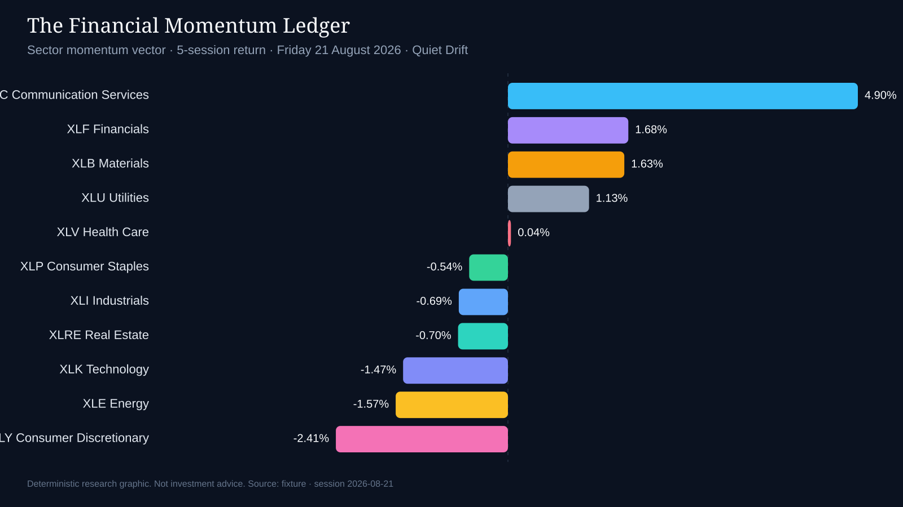

The Financial Momentum Ledger · session close 2026-08-21 · America/New_York
Market weather: Quiet Drift. No dominant regime — statistics over stories, patience over conviction. λ₁ 5.05 vs random-matrix bound 7.03 · leadership concentration 12% · Hurst 1.00 · rotation velocity 0.13 · cycle phase -105°.
Today, 5-session sector momentum was strongest in Communication Services (XLC) at +4.90%. The weakest 5-session print was Consumer Discretionary (XLY) at -2.41%. XLF posted the largest trailing-volume z-score at 11.53 versus its prior 29 sessions. That is a statistical volume outlier, not proof of institutional accumulation or liquidation.
The tradable S&P 500 proxy SPY returned +0.74% on the session and +1.07% over five sessions. RSI(14) on XLC is 93.79 (overbought); XLY is 26.09 (oversold).

| Rank | Sector | Ticker | 1D | 5D | vs SPY 5D | RSI(14) | Vol z |
|---|---|---|---|---|---|---|---|
| 1 | Communication Services | XLC | +0.98% | +4.90% | +3.83% | 93.79 | 0.10 |
| 2 | Financials | XLF | -0.31% | +1.68% | +0.62% | 87.11 | 11.53 |
| 3 | Materials | XLB | +0.97% | +1.63% | +0.56% | 51.12 | -0.81 |
| 4 | Utilities | XLU | +0.67% | +1.13% | +0.07% | 35.27 | 0.03 |
| 5 | Health Care | XLV | -0.57% | +0.04% | -1.02% | 72.91 | 4.72 |
| 6 | Consumer Staples | XLP | +0.30% | -0.54% | -1.61% | 27.12 | 0.16 |
| 7 | Industrials | XLI | -0.70% | -0.69% | -1.75% | 30.32 | -2.51 |
| 8 | Real Estate | XLRE | -0.74% | -0.70% | -1.76% | 52.94 | 0.77 |
| 9 | Technology | XLK | +0.44% | -1.47% | -2.53% | 19.02 | -1.53 |
| 10 | Energy | XLE | +0.57% | -1.57% | -2.64% | 23.77 | -1.67 |
| 11 | Consumer Discretionary | XLY | +0.35% | -2.41% | -3.47% | 26.09 | 0.20 |
Educational market statistics only. Not investment advice, not a solicitation, and not tailored to any portfolio or personal circumstances. Past prints do not predict future results. Data provider: fixture.